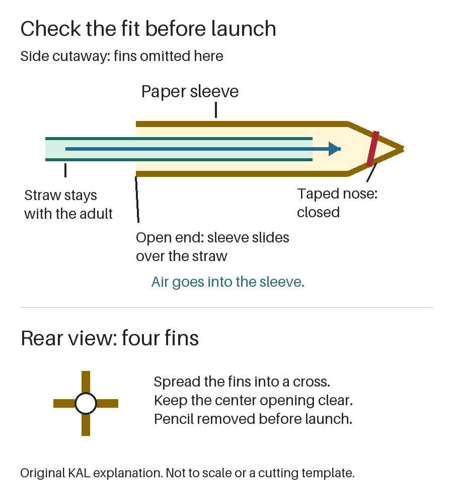

Prepare | count down | watch
Paper Straw Rocket
Turn a paper sleeve into a small rocket. An adult builds and launches; your child can decorate, count down or watch.
Printer required. Get ordinary printer paper, a pencil, scissors, tape and a straight plastic drinking straw that fits inside the paper tube.
Adult-led throughout: keep tools and the launcher with you. Choose a clear launch direction away from people and faces. If you cannot keep it clear, choose another activity.
Research-backed, not family-tested by Kid Activity Lab. This is not a child-launch or independent-play activity.
Adult setup: one paper model
Open NASA's rocket template (PDF) and print page 1. Use its outlines, not the diagram below. No printer? Try our paper helicopter instead; it is a different activity, not a substitute rocket recipe.
- Cut the parts. Cut out the body rectangle and both fin units, separating the fins at the middle scissors mark. A child can decorate the flat paper before the adult cuts.
- Roll the body. Roll the rectangle lengthwise around the pencil and tape the long seam. Remove the pencil to check the straw: it must slide inside without large gaps. Remake a pinched or loose tube rather than force it. Remove the straw and put the pencil back for the next steps.
- Add the fins. Tape each fin unit's center rectangle to an opposite side of the tube at its bottom opening. Nothing should extend below that end. Bend the four triangular fins apart into a cross when viewed from behind.
- Seal the nose. With the pencil still inside, twist the paper at the other end around its tip. Tape the twisted nose closed, then remove the pencil. The bottom stays open.
Put the pencil, scissors and loose scraps away. Check that the finished sleeve slides off the straw freely and that tape does not cover its opening. This version uses a paper sleeve, not a second straw or pipette. Do not add a hard tip, clips or weights.

{kind=link}
Count down, then watch
The adult checks the clear direction, holds the straw with the rocket pointing away from everyone, and blows outward through the straw once. The paper sleeve leaves; the adult keeps the straw. Never aim at a person, including during a fit check.
Invite your child to count down or say, "Watch where the paper lands." Everyone waits outside the launch path until the adult lowers the straw and calls retrieval. Watching from a comfortable seat or declining is fine; no child needs to blow.
Stop if anyone enters the path, a child mouths the materials, a straw or paper part is damaged, or adult control cannot continue. Do not launch toward faces, chase while holding a straw in the mouth, or use suction to clear a jam. Keep all launch equipment with the adult between tries.
Stuck or leaking?
First lower the launcher and take it away from the mouth. These are inspection suggestions, not guaranteed fixes. Do not blow harder to overcome a problem.
- Sleeve stays stuck
- Slide it off by hand. Check for pinched paper or tape catching the straw. Remake the same paper tube if it cannot slide freely; do not force or enlarge it while it is in the mouth.
- Air escapes; little movement
- Inspect the nose and long seam for an opening. Retape an open seam, keeping the bottom clear. Replace torn paper. If the fit or seal remains unclear, end the trial.
One more try, or finish
After a working start, repeat once with the same setup and ask, "Did it land in the same place?" No distance contest or worksheet is needed. The enclosed air can push the sleeve off the straw; this is a paper model, not an engine-powered rocket.
Collect the rocket, straw, tape and paper offcuts. With younger siblings nearby, the adult manages the materials and retrieval; if that is not practical, stop. Preparation time, play duration and cleanup effort have not been measured.
Sources and limits
The construction follows NASA JPL's straw rocket and linked template, checked September 21, 2026. Follow the webpage's taped-nose instruction even though the worksheet does not mention that tape. NASA describes school grades 4-8, not ages 4-8.
NASA Glenn's paper-rocket guidance, checked the same day, supports leak checks and warns against aiming toward anyone because of eye injury risk. Its alternative nose and fin pattern are not used here.
KAL's adult-only launch, child roles, stop/recovery sequence and diagram are editorial adaptations, not an age recommendation or safety certification. No physical or family test by KAL is recorded. Flight, comprehension, enjoyment, learning, repeatability, mess and safety outcomes remain unknown.